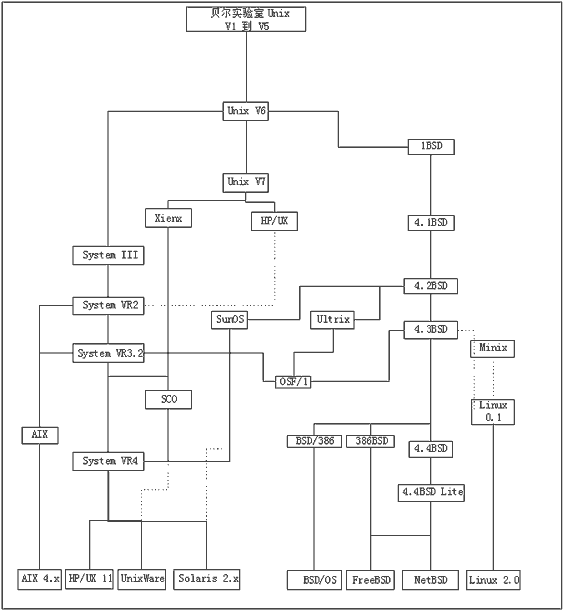
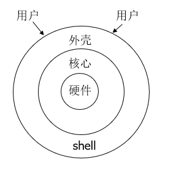

Unix 记忆留存
前言
本篇博客是笔者在学习Unix课程时所积累的学习笔记。
希望对后来学习Unix的友友复习准备Unix的期末考试有帮助。
什么是UNIX
UNIX是一类操作系统。
狭义理解，UNIX是一个分时操作系统的核心，控制和分配计算机资源（软硬件），协调各应用进程的运行。
广义理解，UNIX除了其核心外，还包括一些基本的工具，如编辑器、编译器、文件操作工具、文字处理工具等。
更广义地理解，UNIX还包括用户自己开发的各种工具软件。
UNIX的历史
1965年，贝尔实验室参与由MIT和GE发起的一个计划：开发一个多用户、多任务、多层次（multi-user、multi-processor、multi-level）的操作系统MULTICS（MULTiplexed Information and Computing System）
1969年，MULTICS计划失败，贝尔实验室的工程师们退出该计划。 Ken Thompson将自己开发一款原本运行在MULTICS系统上游戏软件“Space Travel（星际之旅）”移植到GE-635的机器上（GECOS系统），但速度很慢，且GE-635的运行费用昂贵（75$/秒）
Ken Thompson决定为自己的游戏软件寻找一个替代的开发运行环境。正好有一台PDP-7（DEC公司生产）迷你计算机闲置。 Ken Thompson和Dennis Ritchie共同开发了一个简单的操作系统，仅支持两个用户，也只有两个用户（作者自己）。Brian Kernighan 参照MULTICS将这个简单的操作系统戏称为UNICS，后来人们取其谐音称UNIX。
1970年----UNIX元年。
良好的可移植性促使UNIX系统蔓延。1974年，Ken Thompson的母校U.C. Berkeley开始接触UNIX。
1977年，Bill Joy修改了部分Kernel，编写了vi、pascal编译器等，产生了1BSD（Berkeley Software Distribution）。
1978年，BSD UNIX与TCP/IP开始结合，成为最有影响力的UNIX系统。
1988年，为统一各UNIX系统编程接口，提供应用程序在各UNIX系统之间的可移植性。IEEE出台了POSIX（Portable Operating System Interface）标准，定义了UNIX系统必须提供的接口函数（在C语言头文件中定义）

需要掌握Unix历史，这里考的比例还不低。
Linux
Linux的由来
1987年，荷兰阿姆斯特丹Vrije大学Andrew S. Tanenbaum教授（MIT学士，Berkeley博士）为课堂教学编写了Minix系统。
1991年，年仅21岁的芬兰赫尔辛基大学的学生Linus Torvalds参考Minix开发了PC版的UNIX，命名为Linux。
Linux的特点
与UNIX兼容，遵从POSIX标准
自由，开源
性能高，安全性强
Linux的版本
核心版本 由Linus本人负责维护，版本号由三部分组成x.y.z，x是主版本号，y是次版本号，z是修订次数。次版本号为偶数表示稳定的版本，奇数表示测试版。
发行版 各公司推出的版本。如Red Hat，红旗Linux等等，有上百种。
Ubuntu Linux
创始人 Mark Shuttleworth，1973年生于南非，现居伦敦。2004年通过旗下的Canonical公司来资助Ubuntu Linux的开发
是目前增长势头最强劲的Linux发行版
操作系统
用户与计算机硬件之间的界面，它是控制、管理计算机系统内各种硬件和软件资源，有效地组织多道程序运行的系统软件(或程序集合)。
指令
登录
who 显示系统中有哪些使用者正在上面
who am I/whoami 实测whoami有效 表示当前用户
write username 给Username发消息
man command 查看command的手册
w/wr 执行这项指令可得知目前登入系统的用户有哪些人，以及他们正在执行的程序 实测w有效。
logout logout指令让用户退出系统，其功能和login指令相互对应。
常用操作
行编辑器
1 | ed # 打开ed编辑器 |
这玩意其实挺不常用的 = =,现在可能更多的是vim和nvim等
但积累一下还是有必要的，因为假如不小心把系统玩坏了，就只能用这个编辑器来抢救系统了。
文件列表
1 | ls //普通列出当前目录所有文件 |
常用命令
cat filename 命令用于连接文件并打印到标准输出设备上。
mv 参见Linux指令操作记录
cp 参见Linux指令操作记录
rm 参见Linux指令操作记录
针对文本文件的命令
wc 利用wc指令我们可以计算文件的Byte数、字数、或是列数，若不指定文件名称、或是所给予的文件名为”-“，则wc指令会从标准输入设备读取数据。
gerp 参见Linux指令操作记录
sort 命令用于将文本文件内容加以排序。默认排序为按列第一个字符的ASCII
cmp 命令用于比较两个文件是否有差异。
当相互比较的两个文件完全一样时，则该指令不会显示任何信息。若发现有所差异，预设会标示出第一个不同之处的字符和列数编号。若不指定任何文件名称或是所给予的文件名为”-“，则cmp指令会从标准输入设备读取数据。
diff 命令用于比较文件的差异。
diff 以逐行的方式，比较文本文件的异同处。如果指定要比较目录，则 diff 会比较目录中相同文件名的文件，但不会比较其中子目录。
diff和cmp的区别在于diff按行比较，cmp按字比较。
文件目录
1 | pwd 显示当前路径（目录） |
Shell
定位

Shell的版本
bsh, csh, ksh, bash,…
Shell命令提示符
root用户 #，普通用户$, %,…
内部命令和外部命令
shell自己完成的命令为内部命令，如cd等；调用某个程序来完成的命令为外部命令，如ed。
文件名缩写（模式）
1 | ls *.c //匹配任意以.c为后缀的文件 |
I/O重定向
1 | ls > tmp //将标准输出重定向到文件tmp中（清除原有文件中的数据） |
管道
1 | who | wc -l // 计算所有用户登录的终端数 |
进程
1 | who; whoami //多个命令同时运行 |
环境设置
1 | 设置shell内部变量值 |